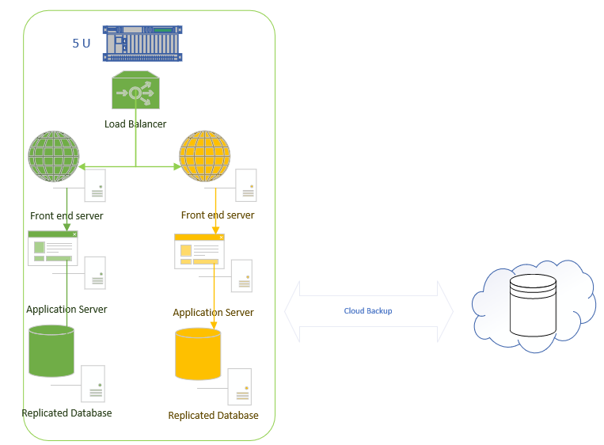
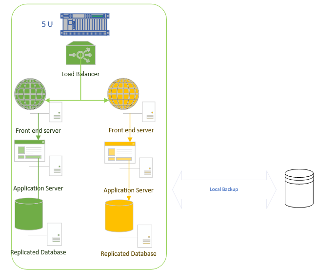
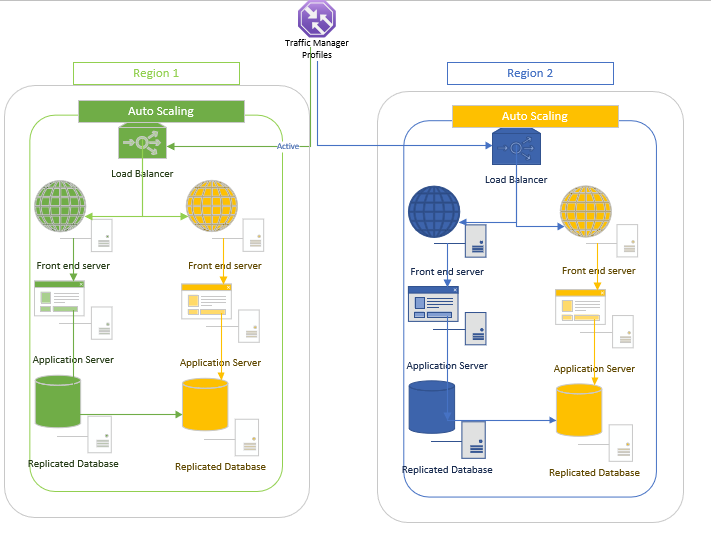

The focus of unit10 was practival applications and issues in DR implementations. The cloud seems to be a very valuable
-yet sensitive- way forward. The implications of storing data in the
cloud , relying on service providers, vendor lock-in need to be considered carefully before such a critical decision. Seminar 10 was a good opportunity to put some theory into practice to try and design a few solutions. Below is my feedback from these activities:
Part A
Read Opara-Martins et al (2014) and Morrow et al (2021) and answer the following questions:
Q1.What are some of the main vendor lock-in issues the authors identify? How would you mitigate them?
In the two papers several
issues are identified. The issues are related to interoperability,
portability and how the lack of standards in the industry has enabled
key players to develop their own systems, APIs , and solutions which
are not interoperable with other cloud systems. There are different
facets to the vendor lock-in trap ranging from developing your cloud
and its applications in a way that it would be difficult to move to
another vendor, to falling victim to paying a high price for getting
back your own data. Vendor lock-in is particularly problematic if cloud
solutions are not deployed with portability and interoperability by
design. A good example here would be to avoid creating architectures
which rely on vendor specific services as this layer might not be
mappable 1-1 to the API of another vendor. An alternative approach
would be to go multicloud in designs so that relience on a single
vendor is avoided.
Q2.What are some of the security concerns with the modern cloud? How can these be mitigated?
Most security issues related to the modern cloud are not because of modern cloud failures but because of misconfigurations. There is a false sense of security that the cloud is inherently safe as the most well known vendors want to protect their reputation and business name. Many users forget that the cloud is just a plarform and therefore the responsibility for what is created is not with the cloud provider but the user. The first mitigation is understanding the cloud model and who is responsible for which aspect of safety. A number of key areas have been identified such as sound IAM , data protection , and monitoring the environment. Quite simply it doesnt matter if the most sophisticated encryption mechanism is in place or whether the user assignments are properly allocated if an attacker has privileged access to the environment and can therefore manipulate it at will. Maintaining a good oversight of the environment is important but not sufficient in itself. What is most important is having such elements integrated in the design phase.
Part B
Create a high-level diagram of a DR
solution for each of the following requirements. They should be created
in PowerPoint, and you should include a basic description of each
design. Be prepared to share and discuss your designs in this week’s
seminar.
Requirements: RPO= 1 hr; RTO= 8 hrs; high availability (HA) required.
This first design is based on the consept that RPO and RTO values
are such that no second system is required to be running but that we
should be able to pull data reasonably quickly (within few hours) and
the data loss should not be significant (less than 1 hour). A cloud
backup could server that purpose.

RPO= 24 hrs; RTO = 72 hrs; HA NOT required.
In the second design and as HA is not required it would be
sufficient to back things up in a local database and recover it over a
few days time

RPO= 5 mins; RTO= 1 hr; HA required.
In the third scenario the requirements are stricter and the best
idea is to syncronise (replicate) to a second system for a quick
switchover and a minimum amount of data loss
